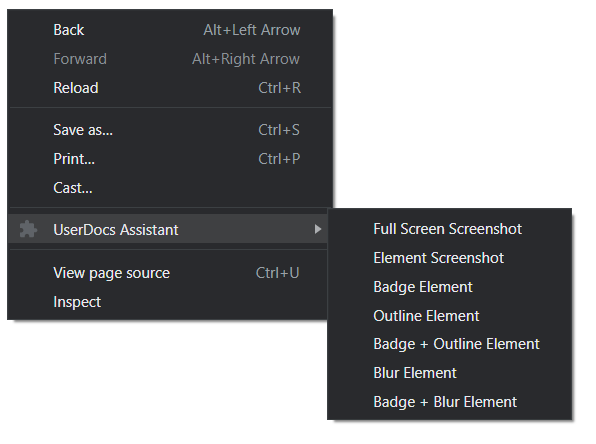
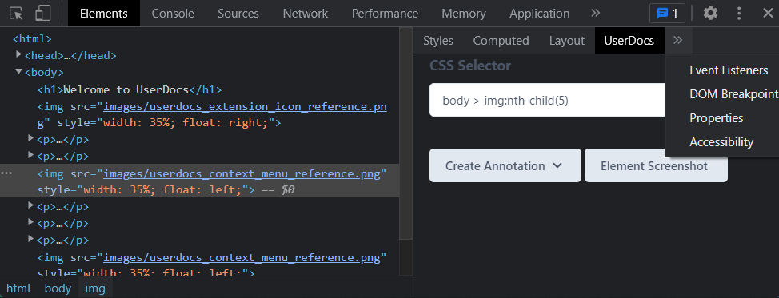

This browser was opened by the UserDocs application. It's under direct control of the application, and will do whatever you tell it to.
This browser launches with an extension that will help you build screenshots. Check the extensions area of the browser. Click the UserDocs icon and turn authoring on to start recording steps in this browser. You may find it convenient to pin the UserDocs extension for convenience.
You'll also find many new options in the context menu if you right click the page. Use these options to automatically create annotations, and create screenshots.
Open the context menu and click inspect to see the UserDocs panel. You'll find it with Styles, Computed, etc. You may need to click the ... button to access the panel.
The UserDocs Devtools panel will display the automatically calculated selector, and similar options to those found in the context menu. Picking any of these options, or selecting one of the options from the context menu will open or modify the step form provided you have the process menu or the step form open.
